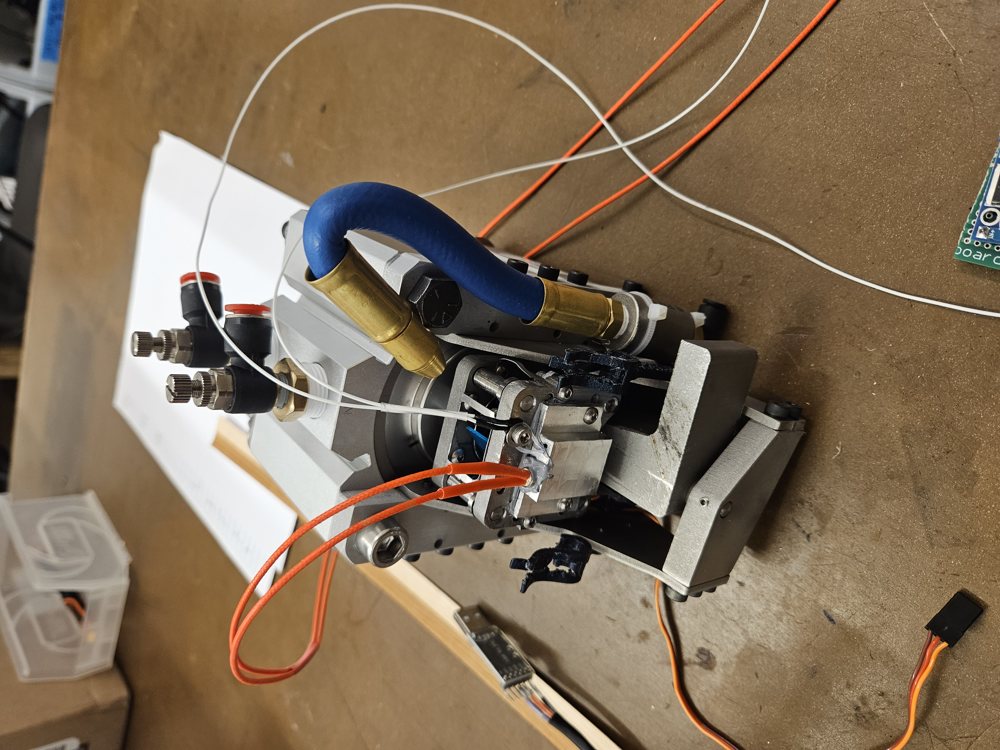
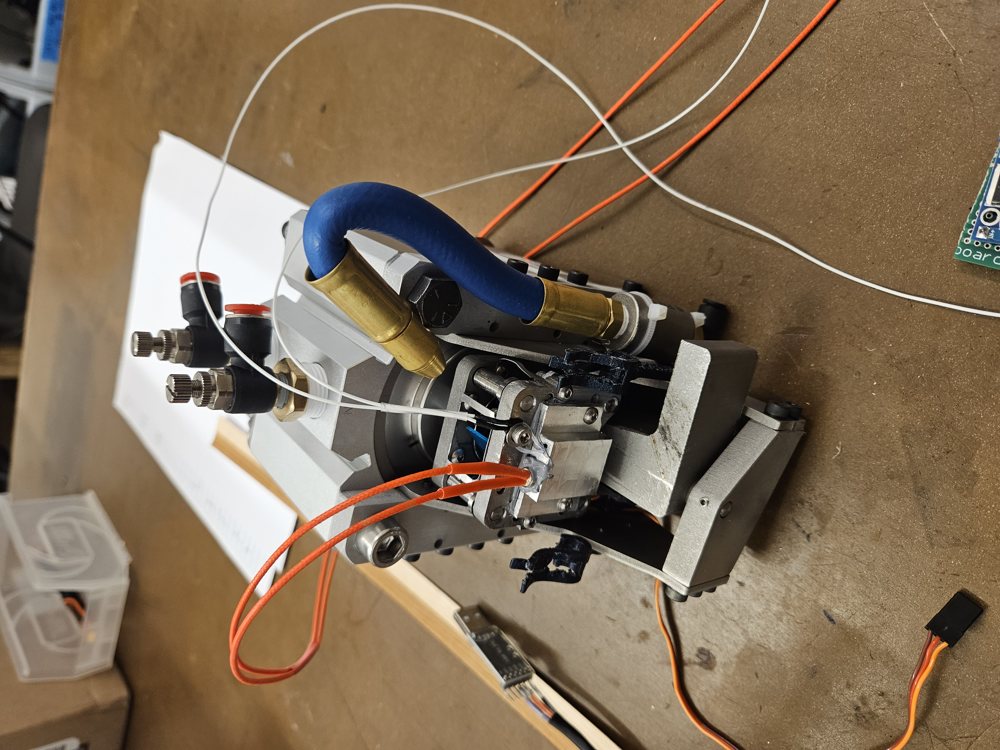
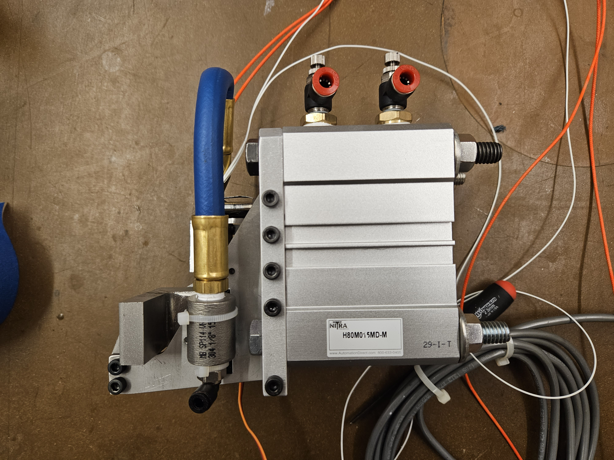
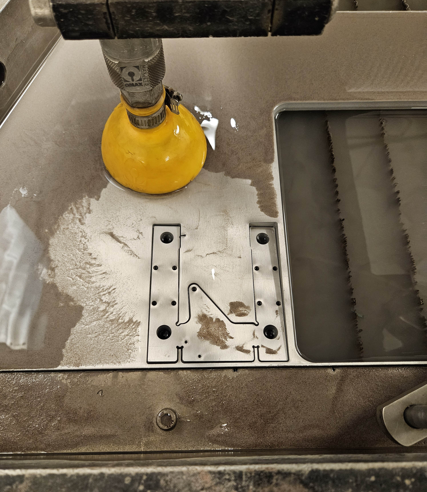
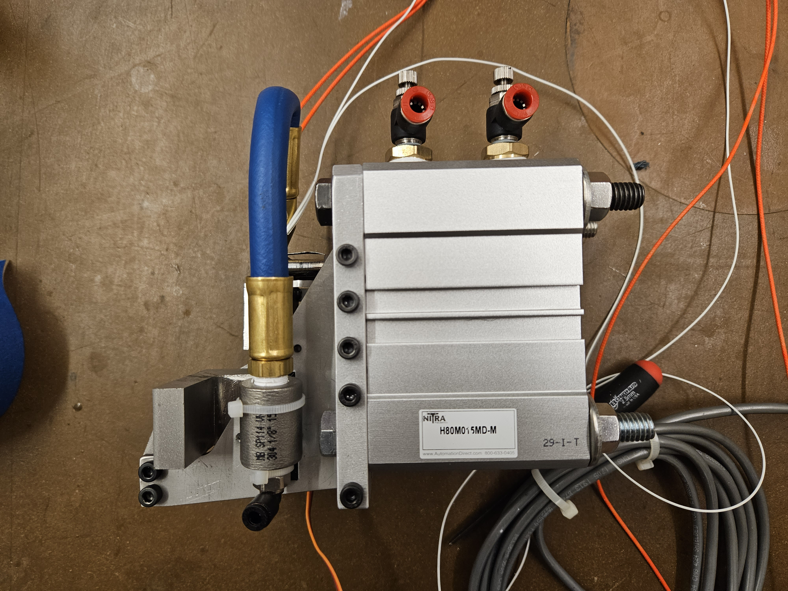
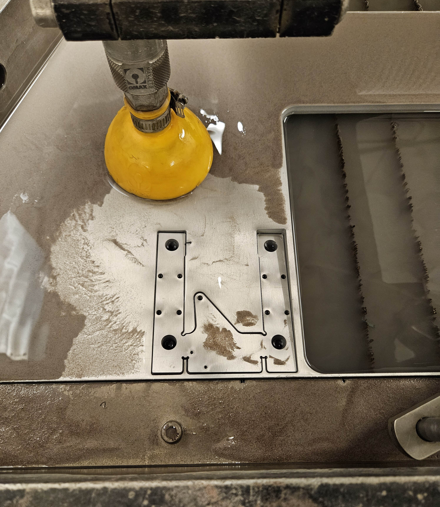
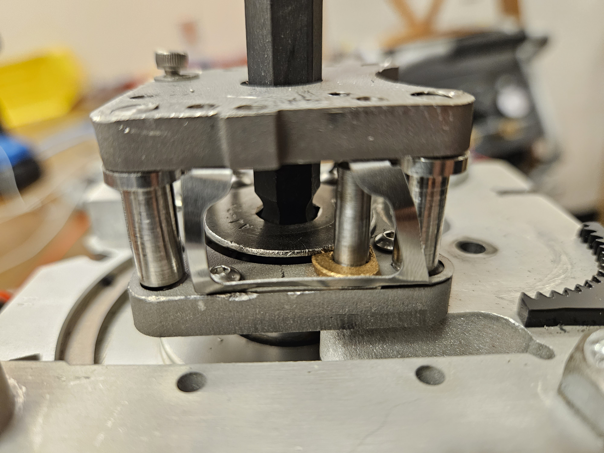
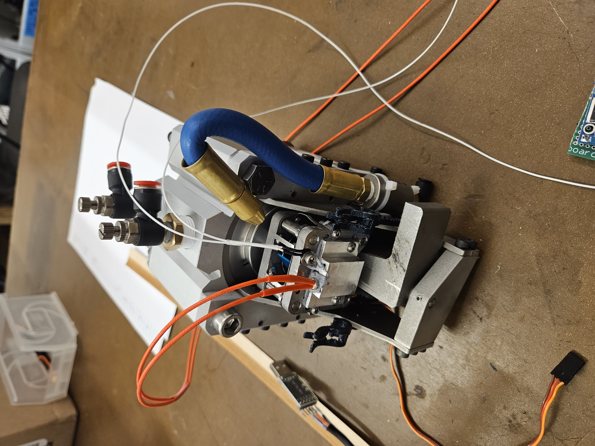
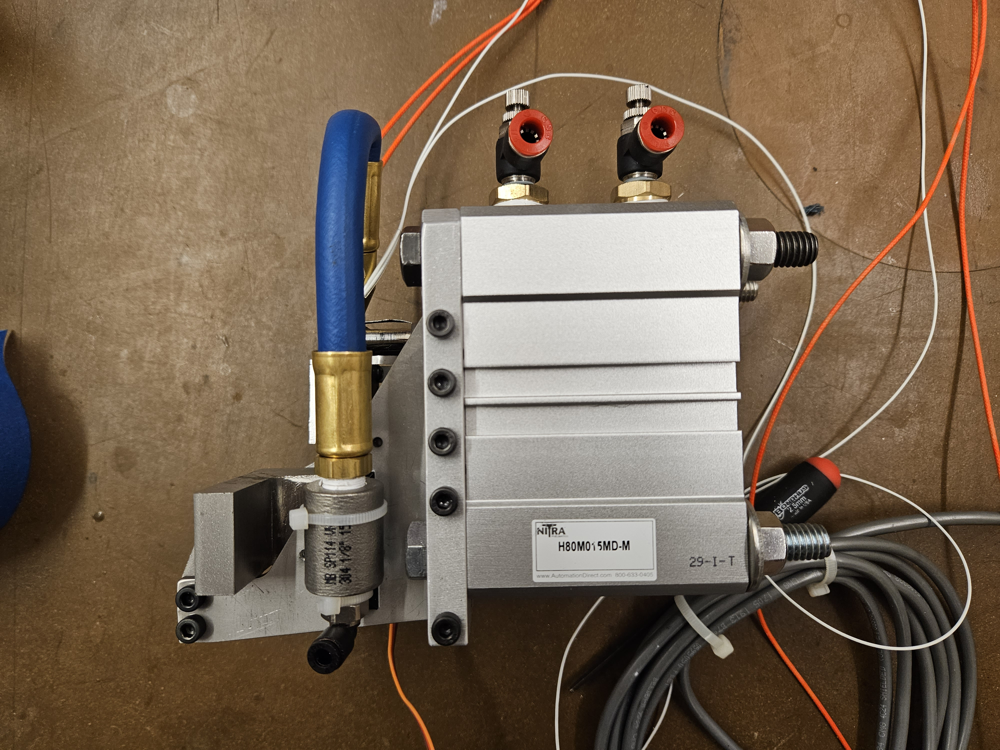
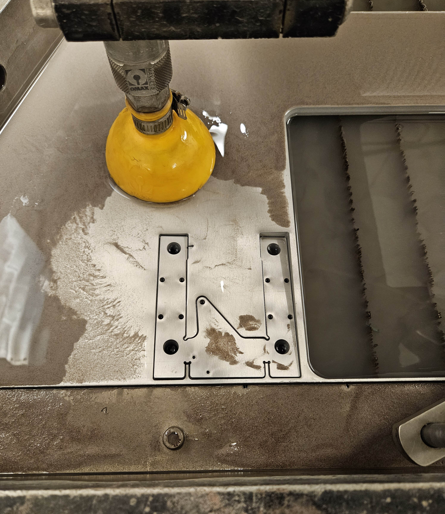

 







This project served as a part-time continuation of my 2023 capstone project during the summer.
The aim was to develop a robotic end-effector capable of welding thin strip wood veneers together using a laser-treated wood lignin melting technique. Note that while 3D printing is used
as an analog here, this project is actually much closer to assembling. It is a mix of traditional manufacturing and additive manufacturing - a mix that minimizes material waste, while preserving the inherent
strength and qualities of wood.
Eventually, this end effector will be mounted on an industrial Kuka arm to generate complex, organic, thin-walled wood structures for use as organic and challenging to construct concrete forms in construction.
This represented the second iteration of the wood welding design previously explored in my capstone project. The new design incorporates a pneumatics system,
enhancing force and pressure control. This advancement allows for deeper exploration into the mechanical properties of wood welding, facilitating the generation of test strips under varying
application parameters such as pressures and temperatures.
The project utilizes an 80mm bore pneumatic cylinder operating at approximately 100psi,
exerting nearly 3500N of linear force on a treated piece of wood. The wood is then held at around 130°C via an aluminum heat block.
A swinging arm behaves like an anvil, supporting the generated thin-wall structures from the inside while immense pressure is applied to the veneer.
Notably, the range of motion of the anvil allows for easier pose control for the Kuka arm, enabling it to approach the structure directly instead of having to carefully slot the application
area over a pre-existing structure. This process causes the wood to weld together seamlessly, without the need for glue or fasteners
This project involved an extreme amount of machining, and was my first foray into making my own custom metal parts. As the forces generated by the effector are extreme, a large amount of design work
was preformed to ensure the effector wouldn't rip itself appart. This can be seen in the force pathing, ballancing, and material choices used in the final construction.


